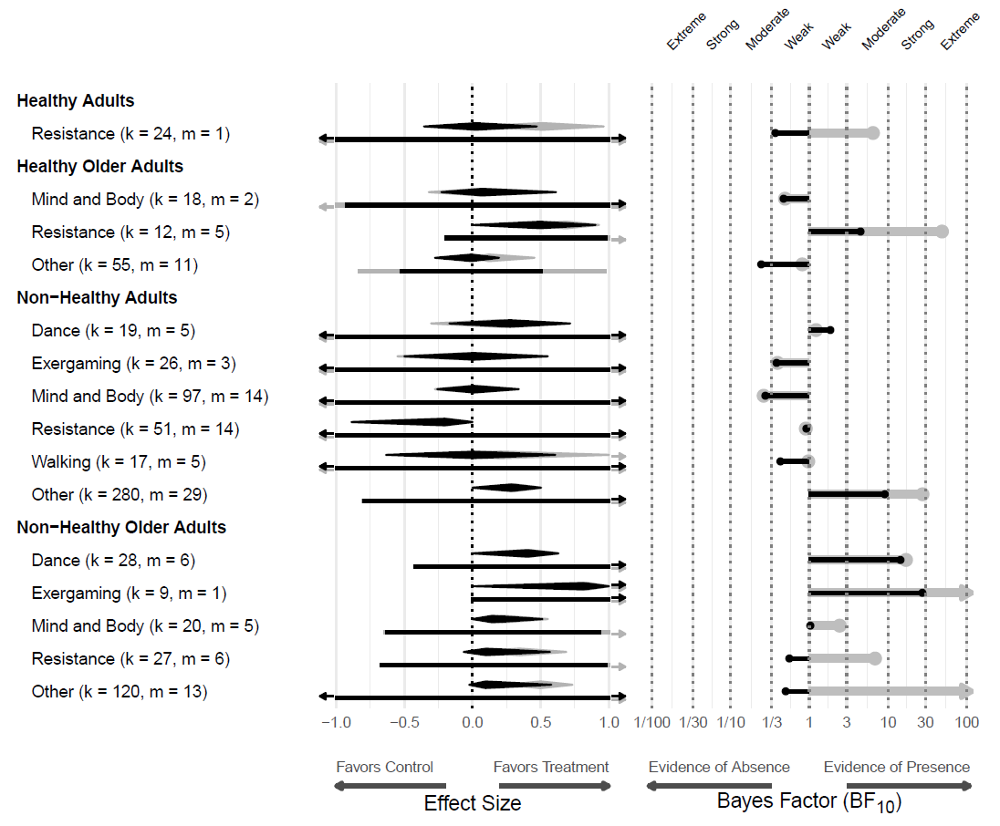

Abstract
Physical exercise is widely believed to enhance cognition, yet evidence from meta-analyses remains mixed. Here we compile a study-level dataset of 2,239 effect-size estimates from 215 meta-analyses of randomized controlled trials examining the effect of exercise on general cognition, memory, and executive functions. We find strong evidence of selective reporting and large between-study heterogeneity. Analyses adjusted for publication bias reveal average effects much smaller than commonly reported (general cognition: standardized mean difference, SMD = 0.227, 95% credible interval 0.116 to 0.330; memory: SMD = 0.027, 95% credible interval 0.000 to 0.227; executive functions: SMD = 0.012, 95% credible interval 0.000 to 0.147), along with wide prediction intervals spanning both negative and positive effects. Subgroup analyses identify specific population-intervention combinations with more consistent benefits. Overall, broad claims of generalized cognitive enhancement resulting from physical exercise appear premature; the evidence supports targeted, population- and intervention-specific recommendations.
Fig: Heterogeneity in the effects of exercise
Reference: František Bartoš, Martina Lušková, Kseniya Bortnikova, Karolína Hozová, Klara Kantova, Zuzana Irsova, Tomas Havranek (2025), "Effect of Exercise on Cognition, Memory, and Executive Function: A Study-Level Meta-Meta-Analysis Across Populations and Exercise Categories," available at osf.io/preprints/psyarxiv/qr8e2_v1.